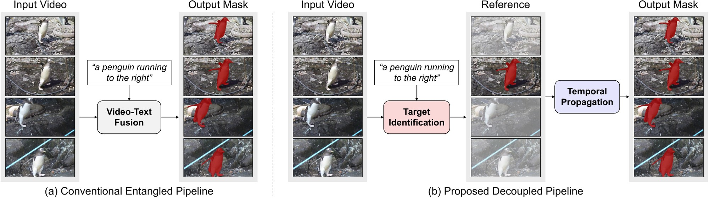
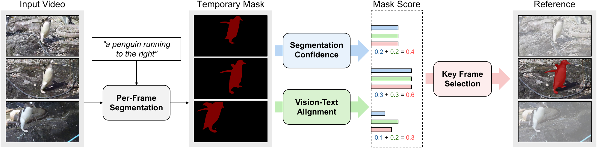
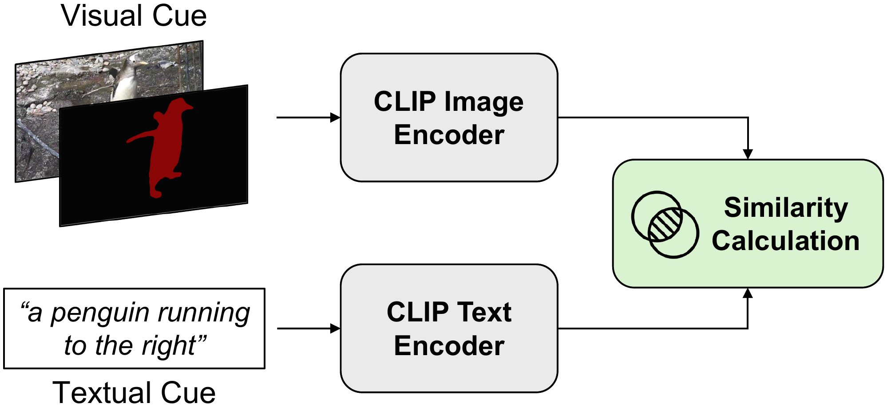
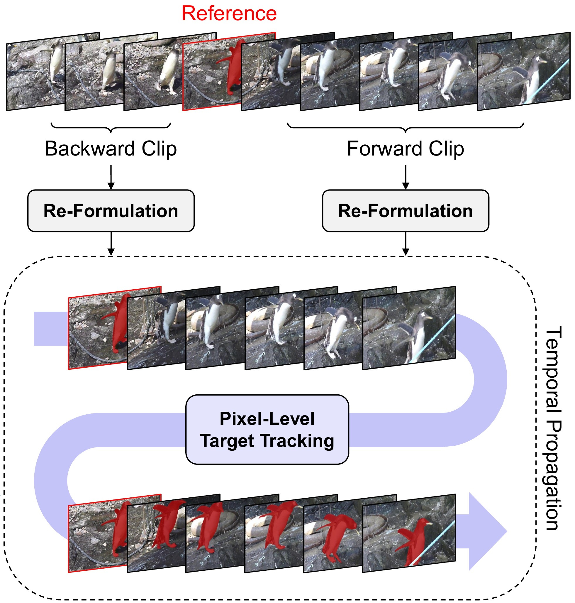
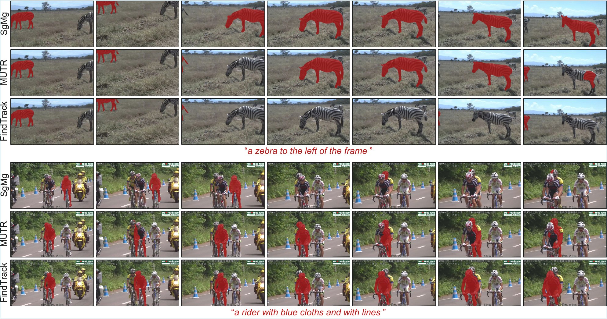
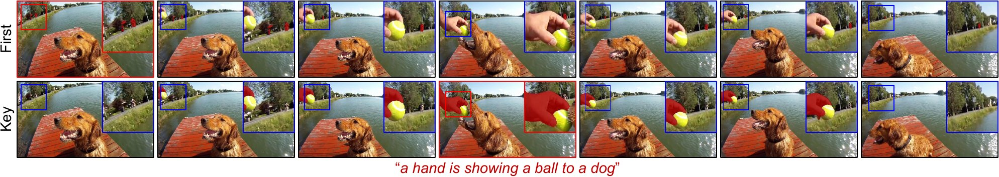
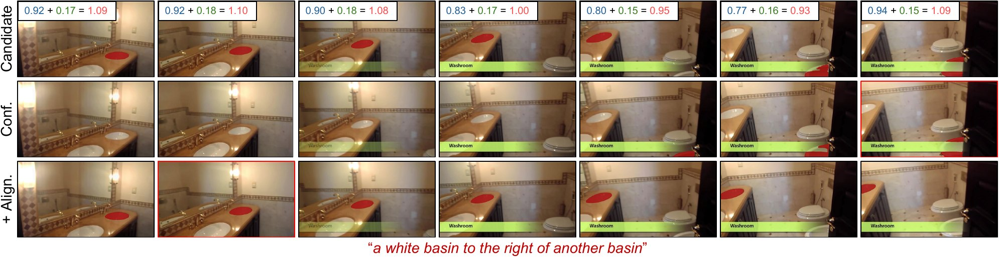
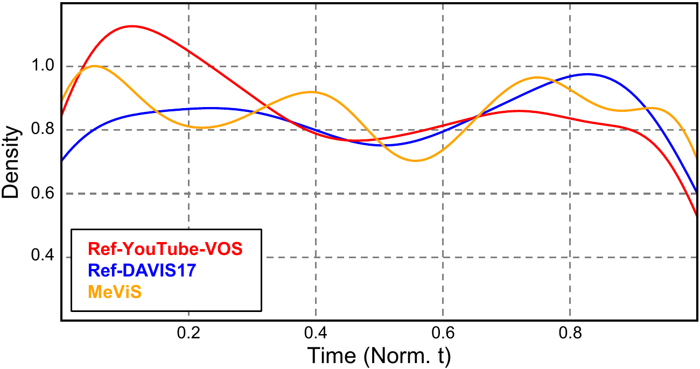
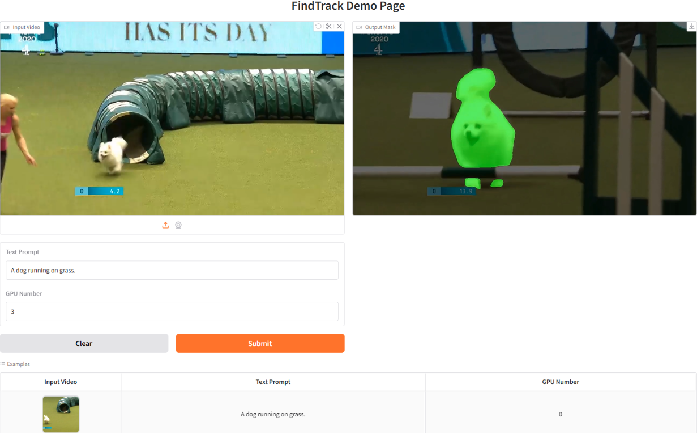

1GenGenAI2Yonsei University
*Equal contribution
ICCV 2025 Workshops
TL;DRFindTrack first finds the frame where the referred object is identified most reliably, then tracks the object from that frame through the whole video, instead of fusing video and text in every frame.
Real-world videos with a language prompt, comparing ReferFormer, SgMg, and FindTrack.
Referring video object segmentation aims to segment and track a target object in a video using a natural language prompt. Existing methods typically fuse visual and textual features in a highly entangled manner, processing multi-modal information together to generate per-frame masks. However, this approach often struggles with ambiguous target identification, particularly in scenes with multiple similar objects, and fails to ensure consistent mask propagation across frames. To address these limitations, we introduce FindTrack, an efficient decoupled framework that separates target identification from mask propagation. FindTrack first adaptively selects a key frame by balancing segmentation confidence and vision-text alignment, establishing a robust reference for the target object. This reference is then utilized by a dedicated propagation module to track and segment the object across the entire video. By decoupling these processes, FindTrack effectively reduces ambiguities in target association and enhances segmentation consistency. FindTrack significantly outperforms all existing methods on public benchmarks, demonstrating its superiority.
Method
Entangled methods process video and text together in every frame. Without an explicit reference, they confuse the target with similar objects and lose it under occlusion or fast motion. FindTrack separates the two problems: it identifies the target in one key frame, then propagates that mask to every other frame.

Five candidate frames are sampled uniformly. EVF-SAM predicts a mask and its confidence on each, Alpha-CLIP scores how well the masked region matches the text, and the frame with the highest combined score becomes the key frame.
The video is split at the key frame into a forward and a backward clip. A memory-based tracker built on Cutie propagates the key-frame mask through each clip.
FindTrack works without additional training. FindTrack++ fine-tunes the per-frame segmentation network where a training set is available.



Results
| Ref-YouTube-VOS | Ref-DAVIS17 | MeViS | ||||||||
|---|---|---|---|---|---|---|---|---|---|---|
| Method | Publication | J&F | J | F | J&F | J | F | J&F | J | F |
| ReferFormer | CVPR'22 | 62.9 | 61.3 | 64.6 | 61.1 | 58.1 | 64.1 | 31.0 | 29.8 | 32.2 |
| SgMg | ICCV'23 | 65.7 | 63.9 | 67.4 | 63.3 | 60.6 | 66.0 | – | – | – |
| HTML | ICCV'23 | 63.4 | 61.5 | 65.2 | 62.1 | 59.2 | 65.1 | – | – | – |
| SOC | NeurIPS'23 | 67.3 | 65.3 | 69.3 | 65.8 | 62.5 | 69.1 | – | – | – |
| VLT+TC | TPAMI'23 | 62.7 | – | – | 60.3 | – | – | 35.5 | 33.6 | 37.3 |
| MUTR | AAAI'24 | 68.4 | 66.4 | 70.4 | 68.0 | 64.8 | 71.3 | – | – | – |
| LoSh | CVPR'24 | 67.2 | 65.4 | 69.0 | 64.3 | 61.8 | 66.8 | – | – | – |
| DsHmp | CVPR'24 | 67.1 | 65.0 | 69.1 | 64.9 | 61.7 | 68.1 | 46.4 | 43.0 | 49.8 |
| VD-IT | ECCV'24 | 66.5 | 64.4 | 68.5 | 69.4 | 66.2 | 72.6 | – | – | – |
| DMVS | CVPR'25 | 64.3 | 62.4 | 66.2 | 65.2 | 62.2 | 68.2 | 48.6 | 44.2 | 52.9 |
| SSA | CVPR'25 | 64.3 | 62.2 | 66.4 | 67.3 | 64.0 | 70.7 | 48.6 | 44.0 | 53.2 |
| SAMWISE | CVPR'25 | 69.2 | 67.8 | 70.6 | 70.6 | 67.4 | 74.5 | 49.5 | 46.6 | 52.4 |
| FindTrack (N = 5) | 70.3 | 68.6 | 72.0 | 74.2 | 69.9 | 78.5 | 47.0 | 44.3 | 49.7 | |
| FindTrack (N = 10) | 70.3 | 68.6 | 71.9 | 73.7 | 69.4 | 78.0 | 48.2 | 45.6 | 50.7 | |
| FindTrack++ (N = 5) | 73.1 | 71.2 | 75.0 | – | – | – | 52.1 | 49.4 | 54.9 | |
| FindTrack++ (N = 10) | 73.7 | 71.8 | 75.7 | – | – | – | 53.2 | 50.5 | 55.9 | |
Ref-YouTube-VOS and MeViS validation sets. N is the number of candidate key frames. FindTrack++ fine-tunes the per-frame segmentation network on Ref-YouTube-VOS and MeViS, which have training sets.

Ref-DAVIS17 videos with multiple entangled objects, large camera movements, and background clutter. Each color is a separate prompt.
Video version of the paper's figure on Ref-DAVIS17, rendered from the released FindTrack results.
Analysis
The first-frame reference simulates plugging a referring image segmentation model directly into a semi-supervised VOS model. When the referred object does not appear early in the video, the first frame gives no reliable cue, and the wrong object is segmented. The key frame found by FindTrack avoids this.
| Ref-YouTube-VOS | MeViS | |||
|---|---|---|---|---|
| Reference | J | F | J | F |
| First frame | 63.4 | 67.2 | 38.7 | 44.7 |
| Last frame | 59.0 | 62.0 | 38.7 | 44.4 |
| Key frame | 68.6 | 72.0 | 50.5 | 55.9 |

The key frame maximizes the mask score σ = w1π + w2ρ, a weighted sum of the segmentation confidence π and the vision-text alignment ρ. Using both scores works better than either one alone, and equal weights give the best result on Ref-YouTube-VOS.
| w1 | w2 | J&F | J | F |
|---|---|---|---|---|
| 1.0 | 0.0 | 69.9 | 68.2 | 71.7 |
| 0.8 | 0.2 | 70.0 | 68.3 | 71.7 |
| 0.5 | 0.5 | 70.3 | 68.6 | 72.0 |
| 0.2 | 0.8 | 69.7 | 68.0 | 71.6 |
| 0.0 | 1.0 | 67.3 | 65.4 | 69.1 |
Ref-YouTube-VOS validation set.

Estimated with kernel density estimation, the selected key frames are spread quite evenly over the video on all three datasets, so the selection is not biased toward any part of the video.

Demo
The repository includes a Gradio web demo that takes your video and a text prompt and shows the output mask. Start it with python demo.py.

@InProceedings{Cho_2025_ICCV,
author = {Cho, Suhwan and Lee, Seunghoon and Lee, Minhyeok and Lee, Jungho and Lee, Sangyoun},
title = {Find First, Track Next: Decoupling Identification and Propagation in Referring Video Object Segmentation},
booktitle = {Proceedings of the IEEE/CVF International Conference on Computer Vision (ICCV) Workshops},
month = {October},
year = {2025},
pages = {3873-3883}
}